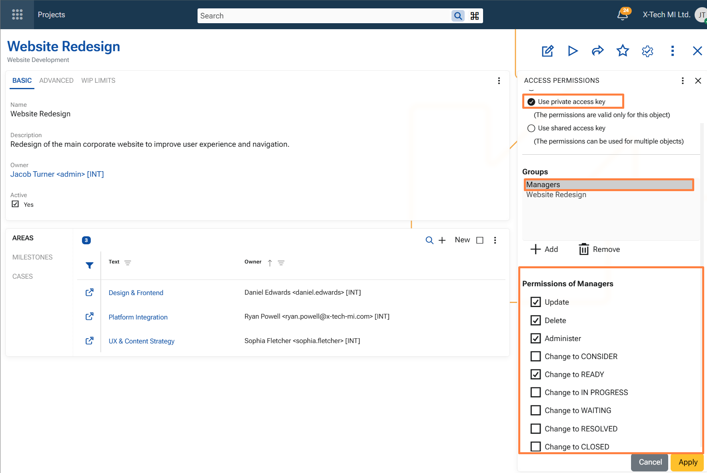
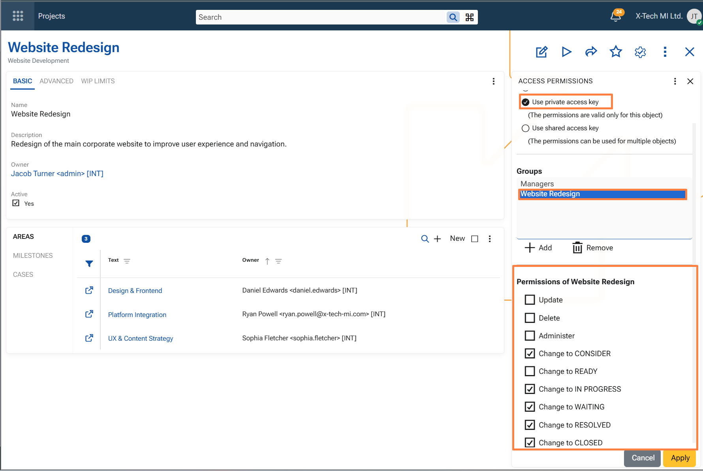
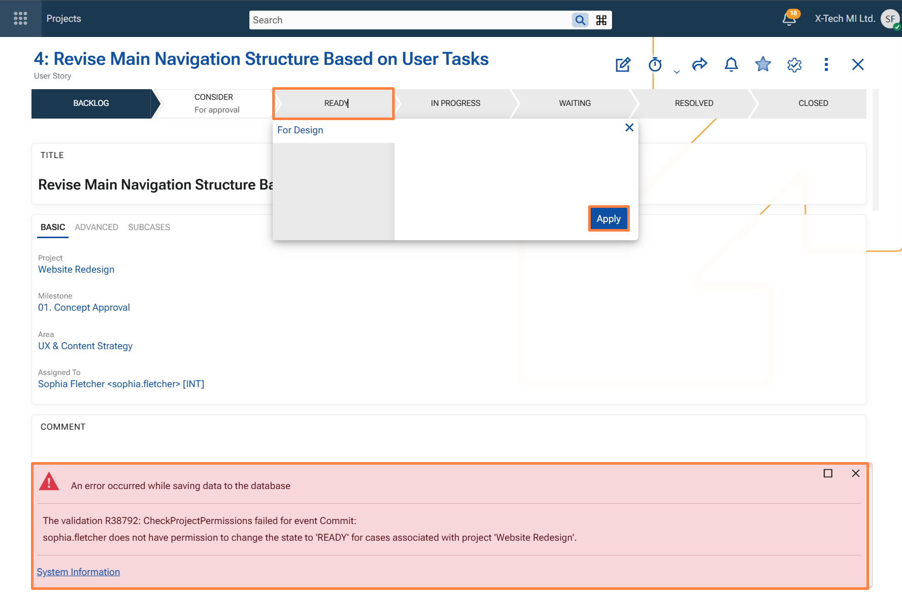

Security
Project-based access control
To enhance confidentiality and governance in Agile PM, ERP.net introduces project-level access control using Access Keys. This security model ensures that only authorized users and teams can view or act on Cases associated with sensitive projects.
Access permissions are defined centrally within the Access Permissions panel of each Project and include:
Basic permissions:
- Update – modify the project or its related Cases
- Delete – remove the project
- Administer – full control over the project security settings
Extended permissions (specific to Agile PM Cases):
- Change to CONSIDER
- Change to READY
- Change to IN PROGRESS
- Change to WAITING
- Change to RESOLVED
- Change to CLOSED
These extended permissions regulate state transitions for Cases under the project.
For example, if a user only has the "Change to READY" right for a project, they can only move Cases into that state — and not others.
Note
These permissions are automatically inherited by all Cases linked to the project.
When a user attempts an unauthorized state change, they receive a clear error message indicating the lack of permission to perform that specific transition for the project’s Cases.
Visibility filtering
To prevent unauthorized access to sensitive Cases, the system applies secure filtering at the data level:
- In the Cases navigator, users only see Cases linked to Projects for which they have access rights.
- In the Global Search, Cases outside the user's access scope are excluded from the results.
This ensures that users can only discover and interact with project information that aligns with their granted permissions, reinforcing data confidentiality across the Agile PM module.
Example: Access and visibility for a private project
The following example shows how project-based access control and visibility filtering work together for a project secured with a private access key.
A project named Website Redesign is configured with a private access key. Access to this key is granted to two groups:
- Managers
- Website Redesign
Because both groups are granted access to the project's private access key, their members can access the project and the Cases associated with it. Users who are not granted access to that key cannot access the project and cannot see the related Cases in the Cases navigator or in Global Search.
Permissions granted to the Managers group
The Managers group is granted the following permissions:
- Update
- Delete
- Administer
- Change to READY
This means that members of the Managers group can modify the project, delete it, administer its security settings, and move associated Cases to the READY state.

Permissions granted to the Website Redesign group
The Website Redesign group is also granted access to the same private access key, but with a different permission set.
Its members can change the state of Cases associated with the project to the following states:
- CONSIDER
- IN PROGRESS
- WAITING
- RESOLVED
- CLOSED
However, they are not allowed to:
- Update the project
- Delete the project
- Administer the project's security settings
- change a Case to READY

Effective permissions for specific users
This configuration affects users according to the groups they belong to.
Jacob Turner is a member of both Managers and Website Redesign. As a result, his effective permissions combine the rights granted through both groups. He can maintain the project and perform all allowed Case state transitions in this example.
Sophia Fletcher is a member of Website Redesign only. She can open the project and work with its Cases according to the permissions granted to that group, but she cannot update the project, delete it, administer its security settings, or move a Case to READY.
Visibility and blocked state transition
Because Sophia Fletcher has access to the private access key of the Website Redesign project, she can open the project and see the Cases associated with it.
If she attempts to change a Case to READY, the operation is rejected because her group has not been granted permission for that specific transition.
The system displays an error indicating that the user does not have permission to change the Case to the READY state for the selected project.
